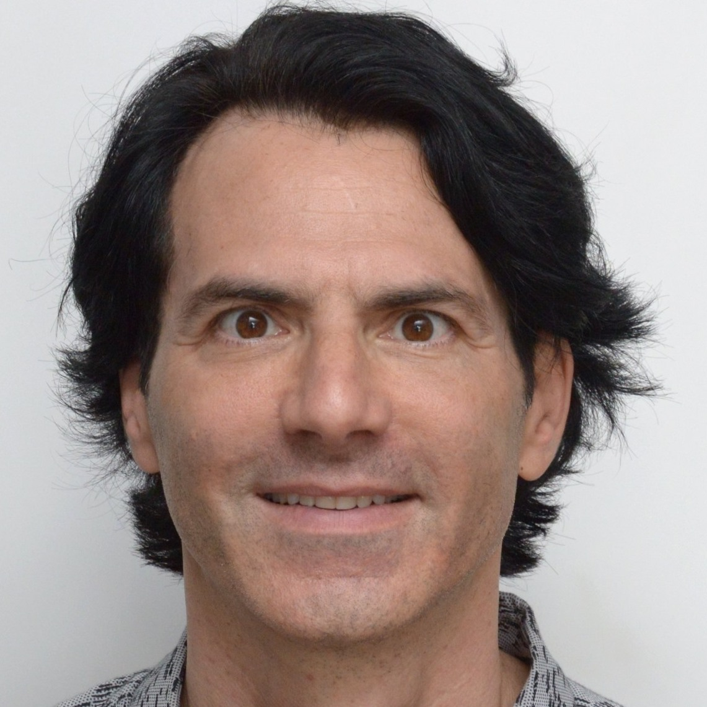

Secondary Appointment Professor of Physics and Astronomy, Primary Appointment Associate Professor of Bioengineering.
Research: structure and function of networks, predominantly in physical and biological systems.
Overview
Is backpropagation the ultimate tool on the path to achieving artificial intelligence as its success and widespread adoption would suggest?
Many have questioned the biological plausibility of backpropagation as a learning mechanism since its discovery. The weight transport and timing problems are the most disputable. The same properties of backpropagation training also have practical consequences. For instance, backpropagation training is a global and coupled procedure that limits the amount of possible parallelism and yields high latency.
These limitations have motivated us to discuss possible alternative directions. In this workshop, we want to promote such discussions by bringing together researchers from various but related disciplines, and to discuss possible solutions from engineering, machine learning and neuroscientific perspectives.
Speakers


Organizers


Yanping Huang
Google
Research Scientist at Google Brain.
Research: scalable learning, reinforcement learning, computational neuroscience.
Research: scalable learning, reinforcement learning, computational neuroscience.


Viorica Pătrăucean
Deepmind
Research Scientist at DeepMind.
Research: computer vision, scalable learning, biologically plausible learning.
Research: computer vision, scalable learning, biologically plausible learning.

Grzegorz Świrszcz
Deepmind
Research Scientist at DeepMind.
Research: machine learning, dynamical systems, mathematical modeling.
Research: machine learning, dynamical systems, mathematical modeling.
Accepted Papers
- A biologically plausible neural network for local supervision in cortical microcircuits - Siavash Golkar, David Lipshutz, Yanis Bahroun, Anirvan Sengupta, Dmitri Chklovskii
- A More Biologically Plausible Local Learning Rule for ANNs - Shashi Kant Gupta
- A Theoretical Framework for Target Propagation - Alexander Meulemans, Francesco S Carzaniga, Johan Suykens, João Sacramento, Benjamin F. Grewe
- Align, then Select: Analysing the Learning Dynamics of Feedback Alignment - Maria Refinetti, Stéphane d'Ascoli, Ruben Ohana, Sebastian Goldt
- Architecture Agnostic Neural Networks - Sabera Talukder, Guruprasad Raghavan, Yisong Yue
- Backpropagation Free Transformers - Dinko D Franceschi
- Biophysical Neural Networks Provide Robustness and Versatility over Artificial Neural Networks - James Hazelden, Michael I Ivanitskiy, Daniel Forger
- BP2T2: Moving towards Biologically-Plausible BackPropagation Through Time - Arna Ghosh, Jonathan Cornford, Blake Richards
- Convolutional Neural Networks from Image Markers - Barbara C Benato, Italos Estilon de Souza, Felipe L Galvao, Alexandre X Falcão
- Deep Networks from the Principle of Rate Reduction - Kwan Ho Ryan Chan, Yaodong Yu, Chong You, Haozhi Qi, John Wright, Yi Ma
- Deep Neural Network Training without Multiplications - Tsuguo Mogami
- Deep Neural Networks Are Congestion Games - Nina Vesseron, Ievgen Redko, Charlotte Laclau
- Deep Reservoir Networks with Learned Hidden Reservoir Weights using Direct Feedback Alignment - Matthew S Evanusa, Aloimonos Yiannis, Cornelia Fermuller
- Direct Feedback Alignment Scales to Modern Deep Learning Tasks and Architectures - Julien Launay, François Boniface, Iacopo Poli, Florent Krzakala
- Feature Whitening via Gradient Transformation for Improved Convergence - Shmulik Markovich-Golan, Barak Battash, Amit Bleiweiss
- Front Contribution instead of Back Propagation - Swaroop Ranjan Mishra, Anjana Arunkumar
- Gated Linear Networks and Extensions - Eren Sezener, David Budden, Marcus Hutter, Christopher Mattern, Jianan Wang, Joel Veness
- Generalized Stochastic Backpropagation - Amine Echraibi, Joachim Flocon-Cholet, Stéphane W Gosselin, Sandrine Vaton
- Hardware Beyond Backpropagation: a Photonic Co-Processor for Direct Feedback Alignment - Julien Launay, Iacopo Poli, Kilian Müller, Igor Carron, Laurent Daudet, Florent Krzakala, Sylvain Gigan
- HebbNet: A Simplified Hebbian Learning Framework to do Biologically Plausible Learning - Manas Gupta, ArulMurugan Ambikapathi, Ramasamy Savitha
- Hindsight Network Credit Assignment - Kenny Young
- How and When does Feedback Alignment Work? - Stéphane d'Ascoli, Maria Refinetti, Ruben Ohana, Sebastian Goldt
- Ignorance is Bliss: Adversarial Robustness by Design through Analog Computing and Synaptic Asymmetry - Alessandro Cappelli, Ruben Ohana, Julien Launay, Iacopo Poli, Florent Krzakala
- Improving Multimodal Accuracy Through Modality Pre-training and Attention - Aya Abdelsalam A Ismail, Faisal Ishtiaq, Mahmudul Hasan
- Investigating Coagent Networks for Supervised Learning - Dhawal Gupta, Matthew Schlegel, James Kostas, Gabor Mihucz, Martha White
- Investigating the Scalability and Biological Plausibility of the Activation Relaxation Algorithm - Beren Millidge, Alexander D Tschanz, Anil Seth, Christopher Buckley
- Layer-wise Learning of Kernel Dependence Networks - Chieh Tzu Wu, Aria Masoomi, Arthur Gretton, Jennifer Dy
- Layer-wise Learning via Kernel Embedding - Aria Masoomi, Chieh Tzu Wu, Arthur Gretton, Jennifer Dy
- Learning Flows By Parts - Manush Bhatt, David I Inouye
- MEAL V2: Boosting Vanilla ResNet-50 to 80%+ Top-1 Accuracy on ImageNet without Tricks - Zhiqiang Shen, Marios Savvides
- Menger: Large-Scale Distributed Reinforcement Learning - Amir Yazdanbakhsh, Junchao Chen, Yu Zheng
- Meta-Learning Backpropagation And Improving It - Louis Kirsch, Jürgen Schmidhuber
- MPLP: Learning a Message Passing Learning Protocol - Ettore Randazzo, Eyvind Niklasson, Alexander Mordvintsev
- Neighbourhood Distillation: On the benefits of non end-to-end distillation - Laëtitia M Shao, Max Moroz, Elad Eban, Yair Movshovitz-Attias
- Optimizing Neural Networks via Koopman Operator Theory - William T Redman, Akshunna S. Dogra
- Policy Manifold Search for Improving Diversity-based Neuroevolution - Nemanja Rakicevic, Antoine Cully, Petar Kormushev
- Predicting Pretrained Weights of Large-scale CNNs - Boris Knyazev, Michal Drozdzal, Graham Taylor, Adriana Romero
- PyTorch-Hebbian: facilitating local learning in a deep learning framework - Jules Talloen
- Randomized Automatic Differentiation - Deniz Oktay, Nick B McGreivy, Joshua Aduol, Alex Beatson, Ryan P Adams
- Scaling Equilibrium Propagation to Deep ConvNets by Drastically Reducing its Gradient Estimator Bias - Axel Laborieux, Maxence M Ernoult, Benjamin Scellier, Yoshua Bengio, Julie Grollier, Damien Querlioz
- Scaling up learning with GAIT-prop - Sander Dalm
- Self Normalizing Flows - Thomas A Keller, Jorn W.T. Peters, Priyank Jaini, Emiel Hoogeboom, Patrick Forré, Max Welling
- Short-Term Memory Optimization in Recurrent Neural Networks by Autoencoder-based Initialization - Antonio Carta, Alessandro Sperduti, Davide Bacciu
- Slot Machines: Discovering Winning Combinations of Random Weights in Neural Networks - Maxwell M Aladago, Lorenzo Torresani
- Supervised Learning with Brain Assemblies - Akshay Rangamani, Anshula Gandhi
- Symbiotic Learning of Dual Discrimination andReconstruction Networks - Tahereh Toosi, Elias B Issa
- The Interplay of Search and Gradient Descent in Semi-stationary Learning Problems - Shibhansh Dohare, Rupam Mahmood, Richard S Sutton
- Towards self-certified learning: Probabilistic neural networks trained by PAC-Bayes with Backprop - Maria Perez-Ortiz, Omar Rivasplata, John Shawe-Taylor, Csaba Szepesvari
- Towards truly local gradients with CLAPP: Contrastive, Local And Predictive Plasticity - Bernd Illing, Guillaume Bellec, Wulfram Gerstner
- Unintended Effects on Adaptive Learning Rate for Training Neural Network with Output Scale Change - Ryuichi Kanoh, Mahito Sugiyama
- ZORB: A Derivative-Free Backpropagation Algorithm for Neural Networks - Varun Ranganathan, Alex Lewandowski
Accepted papers will be presented during the joint poster session.
Reviewers
We would like to thank all of our reviewers for their great work: Andrea Zugarini, Apoorva Nandini Saridena, Devansh Bisla, Enrico Meloni, Francesco Giannini, Gabriele Ciravegna, Giovanna Dimitri, Giuseppe D'Inverno, Giuseppe Marra, Haoran Zhu, Jing Wang, Joao Carreira, Lapo Faggi, Laura Sanabria-Rosas, Lisa Graziani, Maryam Majzoubi, Shihong Fang, Takieddine Mekhalfa, Yunfei Teng